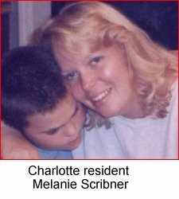

 On the Horizon
As we head into the final days
of the campaign, we need your help
energizing your community to
GET OUT THE VOTE!Call the Clinton/Gore office number
below to volunteer.North Carolina Highlights
Charlotte resident Melanie Scribner
is profiled in the 5th edition of America's Home PageMurfreesboro resident Debra Raynor
writes in to the 6th edition ofClinton-Gore '96 Headquarters
1910 Bernard St.
Raleigh, NC 27608Phone: 919-831-0661
Fax: 919-546-0448
State Director: Jim Franklin
North Carolina Coordinated Campaign
1910 Bernard St.
Raleigh, NC 27608Phone: 919-508-1996
Fax: 919-508-1997
Paid for by Clinton/Gore ’96 General Election Committee, Inc.